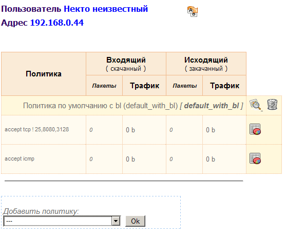
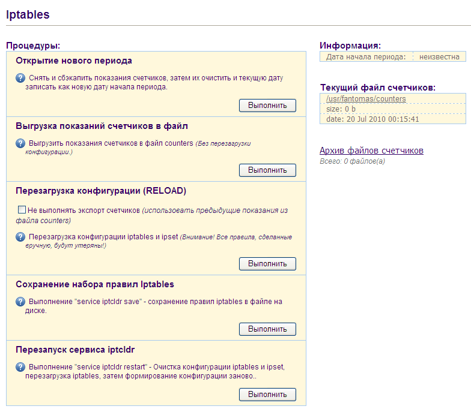

4. Настройка и администрирование Fantomas4.1 Настройка параметров В программе есть ряд параметров, которые касаются разных моментов работы программы. Они живут в файле config.php. Путь к каталогу, в который сохраняются резервные копии файлов счетчиков. Путь к каталогу, в котором хранятся файлы листов ipset. Путь к каталогу, в котором хранятся файлы описаний групп клиентов (IP-адресов).### Внимание! Если Вы решите изменить значения этих путей, то соответственно, Вы должны скопировать файлы из текущих каталогов в новые, а также позаботьтесь о том чтобы у пользователя httpd было право на запись в каталоги, которые Вы укажете. Если значение $filter_web_access установлено в 1, тогда при попытке входа на веб-интерфейс, проверяется IP-адрес входящего, и если он не совпадает ни с одним из списка $allowed_ip, вместо формы авторизации в виде фрейма грузится сайт что указан в переменной $site_to_redirect. Соответственно, при $filter_web_access=0 опция отключена. Имя группы пользователей, которая будет открываться по умолчанию в мониторе трафика. Время задержки (тайм-аут) в секундах, используемое по умолчанию в трафик-мониторе и мониторе процессов. При формировании отчета по трафику из БД ulogd, рассчитывается процентное отношение трафика конкретного хоста назначения к общей сумме трафика. Так вот, в этой переменной задается уровень "отбивки" хостов, процент которых меньше или равен этому. Они не попадут в отчет с целью не захламлять его почти нулевыми значениями (обычно их много). URL для запроса информации whois в отчетах по веб-трафику, к этой строке в конец добавляется адрес IP, по которому запрашивается информация. Настройка сет-панели: Если значение указано TRUE, то после любой операции редактирования сет-листов, новое содержимое сет-листа будет сохраняться на диск в соответствующий файл в каталоге, указанном в переменной $sets_dir. Настройка сет-панели: Если значение указано TRUE, то сет-панель будет запрашивать подтверждение при операциях редактирования или изменения сет-листов. Настройка сет-панели: Если значение указано TRUE, то в сет-панели в списке сет-листов будет показываться табличная информация о количестве элементов и биндингах. Список лог-файлов, которые можно будет просматривать их веб на странице состояния системы. Количество строк с конца лог-файла, которые программа будет загружать для показа. Размер по высоте (в пикселах) окна просмотра лог-файла. Размер по длине (в пикселах) окна просмотра лог-файла. Путь к файлу crontab (файл настроек демона-планировщика crond). Путь к исполняемому файлу демона crond. Путь к исполняемому файлу программы crontab. Путь к лог-файлу crond. Опция указывает состояние порт-фильтра: FALSE - порт-фильтр выключен, TRUE - включен. Если опция выставлена в TRUE, то в веб-интерфейсе в разделе "MySQL", при просмотре информации о состоянии баз, не показываются данные о таблицах входящих в БД, а только общая инфо о БД. Опция указывает состояние подсистемы ведения логов Fantomas: FALSE - логи не ведутся, TRUE - логи ведутся. Путь к каталогу с лог-файлами. Порог уровня событий, записываемых в лог, значения могут быть от 1 (наиболее полный лог) до 5 (только самые критические и системные ошибки). Указывает записывать ли в лог события о проверке пароля успешно авторизовавшегося в программе клиента во время его переходов из раздела в раздел (данные авторизации клиента перепроверяются при каждом новом запуске любого из разделов). Имя текущего файла лога программы. Максимально допустиммый размер файла лога, "М" - означает мегабайты ("k"-килобайты, "G"-гигабайты), при достижении файлом указанного размера, в имя файла добавляется метка текущего времени и создается новый файл с именем как указано в переменной $syslog.
Режим вывода информации для консольной утилиты iptconf.php: TRUE - информация выводится в сокращенном виде, FALSE - отображение полной информации. Погрешность рассчета счетчиков при применении квот. При проверке достижения пользователем квоты, значение квоты уменьшается на это значение. Ключ для шифрования данных авторизации, длина ключа должна быть 9 символов (только латинские буквы и цифры), иначе Fantomas самостоятельно дополнит на свое усмотрение или соответственно урежет длину ключа. Начиная с версии 0.1.5, если система поддерживает шифрование MD5, то Fantomas использует MD5-хеширование вместо шифрования по ключу и тогда эта опция не используется. Если значение TRUE, то вместо шифрования по ключу, Fantomas использует MD5-хеширование без применения ключа. Может быть TRUE или FALSE Параметры подключения к серверу MySQL. Путь к лог файлу MySQL. Он потребуется для того чтоб Вы смогли смотреть этот лог через веб-интерфейс. Название БД, которую Fantomas использует для своих задач. Содержит имя БД MySQL демона Ulogd. Название БД MySQL демона ulogd. Путь к лог файлу демона Ulogd. Он потребуется для того чтоб Вы смогли смотреть этот лог через веб-интерфейс. Устаревшая переменная, в ранних версиях программы отсюда брался список процессов, информация о статусе которых отображалась на странице состояния системы. В последствии инфа о процессах стала не нужна, т.к. появился монитор процессов, а ее бывшее место заняла панель просмотра системных логов. Оставлена для обратной совместимости. Настройка index.php: Тайм-аут в минутах, по истечению которого веб-интерфейс будет "забывать" логин и пароль текущей сессии и прийдется перелогиниться. Если указан 0, то таймаута нет, но параметры сессии будут забыты при выходе из веб-интерфейса. Настройка отображения групп клиентов в веб: указавает подменять ли знаки подчеркивания "_" на пробелы для тегов "cname" при отображении имен клиентов в веб-интерфейсе. 4.2 Настройка загрузки конфигурации iproute2, скрипт "tabloid" Fantomas имеет возможность при старте своего init-скрипта iptcldr загружать список маршрутов Iproute2. Эта опция включается в разделе "Система -> Iproute2", там доступно включение/выключение самой опции, также там можно указать сам файл конфига cо списком маршрутов, и еще там есть панель таблиц маршрутизации в которой можно добавлять/удалять таблицы и просматривать загруженные маршруты по таблицам. ### table <tablename> zoneОбратите внимание на количество знаков "#" и написание "table >name< zone" - писать нужно именно так! Это связано с тем что именно по этим строчкам программа распознает где начинается и где заканчивается секции таблиц. Соответственно, сколько таблиц маршрутизации, столько и секций в файле должно быть. После описания таблиц маршрутизации в файле идет секция описания правил маршрутизации: ### rules zoneЭта зона предназначена для размещения команд описания правил маршрутизации, которые являются общими для всех таблиц. Из веб-интерфейса файл не редактируется, т.к. имхо обычно такой файл вообще настраивается один раз и забывается, поэтому для редактирования файла iproute2-init пользуйтесь консолью. Для чего сделано такое разделение команд по секциям? Сделано это не просто так - в консоли есть специальная утилита для работы файлом iproute2-init - tabloid. Это скрипт располагается в каталоге iptconf/tools и позволяет обрабатывать отдельно каждую из секций файла iproute2-init, его синтаксис предельно прост: tabloid {up|down|reload} [target=<tablename>]Если не указан параметр "target", то обрабатываются все секции файла, в противном случае обрабатываются команды только конкретной секции. Собственно, инит-скрипт iptcldr при загрузке выполняет именно этот скрипт в виде "tabloid up". 4.3 Список подсетей Для любой маршрутизации нужно знать источник и адресата, не так ли? Более того, для вменяемой маршрутизации нужно видеть разницу между объектами в локальной сети и всеми остальными. Для этого при настройке установщик создал список подсетей, подключенных непосредственно к маршрутизатору, их можно настроить в веб или в консоли в файле "Networks". Веб-настройка выглядит примерно так: <subnet_address> [local] [notallforward]Здесь: <subnet_address> - адрес подсети ( например, 192.168.0.0/24 ) local - Признак того что подсеть является локальной, а значит попадает в лист locals и будет использована как локальный dst или src при генерации правил iptables. notallforward - Если указан, то для этой подсети в цепочке FORWARD не создается правило, разрешающее маршрутизацию в нее трафика из остальных подсетей, по типу "-A FORWARD -s $other_subnet -d $this_subnet -j ACCEPT". Политика FORWARD по умолчанию ставится в DROP, поэтому сервер будет маршрутизировать в эту подсеть трафик только тех клиентов, для которых Вы вручную впишите разрешающее правило в файле inits (см. пункт 4.4). Опция полезна для фильтрации доступа между подсетями. К примеру, если у Вас несколько локальных подсетей, одна из которых имеет особый режимный статус и маршрутизировать туда трафик можно только с определенных IP-адресов. пример файла: 127.0.0.1 В этом примере у нас как и в примере выше, одна из подсетей обычная локальная, а вторая - локальная "режимная". При этом, в inits, если пропускаем весь трафик, разрешающие правила могут выглядеть так: -A FORWARD -s 192.168.0.10 -d 10.120.6.0/24 -j ACCEPT Или можно проявить немного фантазии: -A FORWARD -s 192.168.0.10 -d 10.120.6.0/24 -p tcp -m multiport ! --ports 25,3389,8080,3128 -j ACCEPT По умолчанию, в networks попадают только локальные подсети, по которым ведется подчет и ограничение трафика, провайдерских подсетей здесь может и не быть, поскольку по ним обычно не выполняется маршрутизация "сеть-в-сеть". Хотя, у меня были мысли реализовать поддержку openvpn чтоб рулить и удаленными подсетями, а возможно и непосредственно маршрутизацией с iproute2. Поэтому не удивляйтесь тому что, казалось бы, присутствие параметра local здесь кажется бессмысленным. Может и дойдут руки.. 4.4 Список сетевых подключений Здесь все предельно просто - список содержит описания сетевых интерфейсов, с которыми работает программа. link <link_name> [local] {Здесь: <link_name> - Любое короткое имя подключения без пробелов и спецсимволов, логически понятное для Вас и Ваших коллег (например, mylocalnet или corbina). local - То же самое что в networks - признак локального сетевого интерфейса. <iface_ipaddr> - IP-адрес сетевого интерфейса. <iface_name> - Название сетевого интерфейса в системе ( eth0, eth1 .. ethN и т.п.). Фигурные скобки обязательны, причем именно в том виде как показано: открывающая скобка в одной строке с названием линка, а закрывающая обязательно в отдельной новой строке. пример: link propellernet local { 4.5 "Inits" - cписок произвольных правил Iptables Как и предыдущие списки настроек, этот список возможно редактировать как из веб так и в консольном режиме. Данные хранятся в файле "inits". -A FORWARD -s 192.168.0.10 -d 10.120.6.0/24 -j ACCEPT Второй вариант штатного использования касается как раз mangle - можно маркировать трафик циферкой 22, а потом исключать его из общего рассчета по принципу: -t mangle -A PREROUTING -s 192.168.0.10 -d 10.120.6.0/24 -p all -j MARK --set-mark 22В этом случае указанный трафик не будет подсчитываться, т.к. при рассчете будет "вылетать" из COUNT-цепочек, не успев встретить подходящее по условиям правило. Это бывает полезно когда, как в примере выше, Вам нужно организовать маршрутизацию между локальными подсетями "для избранных", но при этом этот трафик является локальным и подсчитываться не должен. 4.6 Политики Политики хранятся в текстовом виде в файле "policies" в каталоге Fantomas. Работать со списком политик можно тоже как из веб-интерфейса, так и в консоли. ##Примечание: Будьте внимательны при редактировании политик, уже назначенных одному или нескольким клиентам - НЕЛЬЗЯ существенно видоизменять политику если она уже на ком то применена. Допускается дополнение таких политик новыми строками, но воздерживайтесь от их видоизменения. Далее разберем синтаксис политик, он имеет следующий вид: policy <policy_name> { ВНИМАНИЕ: если Вы создаете политику из веб-интерфейса, то первую строку "policy <policy_name> {" и последнюю строку "}" писать НЕ НУЖНО. Программа эти теги использует для идентификации политик и отделения их друг от друга, поэтому при созхранении политики начальные и конечные теги будут добавлены автоматически. Но если работаете с политиками из консоли, Вы должны обязательно использовать полный синтаксис. И еще кое что: обратите внимание что закрывающая скобка политики расположена на отдельной строке, а открывающая скобка - на одной строке с названием политики. Это "правильный" синтаксис, к которому программа приучалась с рождения, пожалуйста, используйте именно такое написание. По порядку: <proto> может быть tcp, udp, icmp или all. <ports> может быть одним цифровым портом или несколькими портами через запятую в скобках: (25,1080,3128). Порт или набор портов может иметь отрицание, которое будет означать отрицание порта или ВСЕГО набора портов, причем ставится отрицание внутри скобок: (!25,1080,3128). dst | src указание направленности трафика (--sport/--dport) : если src, то трафик идет с вышеуказанных портов, а если dst - на вышеуказанные порты. По умолчанию dst. К примеру, если у нас стоит задача описать ответный трафик почтового сервера (внутри сети есть почтовый сервер, к которому из интернет создан доступ через DNAT, а у нас стоит задача описать в политике трафик, который идет ОТ почтового сервера в интернет), то в этом случае это будет src from 192.168.0.10, где ip-адрес это <address> from | to если указано, то при генерации правила, в качестве соответствующего аргумента (-s если from и -d если to) используется указанный в этой опции адрес. По умолчанию если iptables принимает в правиле сурс или дестинейшн пустым, то понимает его как all (разрешено все). К примеру, если Вам нужно разрешить трафик tcp (25,110,80) только на mail.ru, то так и пишем: accept tcp (25,110,80) to www.mail.ru. Имейте ввиду (!) что при генерации правила программа вместо www.mail.ru попытается подставить IP (доменное имя в правило iptables пихать как то некорректно), доменное имя от IP она пытается отличить по наличию трех точек, что может быть корректно не всегда. Поэтому желательно использовать все таки IP. Еще пример: Вам нужно сделать проброс порта tcp:3389 внутрь сети, но только с двух ip-адресов. Тогда политика будет выглядеть так: title "Terminal Services DNAT for 2piplz"Согласитесь, несложный синтаксис? :) quota <quota> Здесь указывается квота трафика, при достижении которого этот конкретный accept работать перестанет. Может указываться просто цифрами (понимается как байты), можно указывать обозначения мегабайт и гигабайт: 750mb, 2gb и т.п.. Т.е. если в политике несколько строк accept с разным трафиком, но quote указано только на одном accept, то при достижении лимита остальные два продолжат работать. Заметьте, у действия SNAT адрес source не указывается, в этом нет необходимости т.к. через какой внешний интерфейс уходит трафик определяет опция out. Так жде происходит и при действии MASQUERADE. Собственно, описанные три действия имеют свои прямые корни из iptables и, надеюсь, будут понятны многим читателям. А вот о действии INPUT я поясню - это действие было специально добавлено для обработки трафика, идущего не транзитно через маршрутизатор, а локально к демону или процессу, работающему на сервере. В основном правила, генерируемые этим действием, выполняют accept для трафика своего демона и, если в политике указывается опция count, то "прогоняют" трафик через цепочки подсчета трафика. Таким образом это действие может использовать для подсчета и сбора статистики входящего и исходящего трафика для локальных приложений сервера. Некоторые примеры политик Вы можете найти в дистрибутиве Fantomas в файле policies. 4.7 Управление сет-листами - списки Ipset, файл "ipsetlist" ...Файл "ipsetlist" представляет из себя перечисление листов ipset (по принципу один сет-одна строка), вообще используемых в Fantomas. При старте системы Fantomas ищет файлы с соответствующими именами в каталоге из переменной $sets_dir и загружает в память. ipset -N set_video_nets nethashЭто пример создания из консоли сет-листа, состоящего из двух сетов разного типа - один из них имеет тип iphash, а другой nethash. Соответственно, в лист set_video_nets можно вносить подсети, а в set_video_ip - конкретные адреса, в итоге set_videos представляет их как один сет. ВАЖНО: Есть сет под названием locals. Он используется программой для определения локальных подсетей при генерации правил для iptables. НЕ УДАЛЯЙТЕ его! Иначе будут ошибки при генерации правил, если и сгенерируются, то вряд ли заработают. 4.8 Управление группами и клиентами Данные о группах и о клиентах лежат в каталоге из переменной $users_dir (по умолчанию /usr/local/iptconf/usr). title "Подробное название группы клиентов"Полагаю здесь с первыми двумя строками все понятно, поясню по остальным: каждая строка начинается ip-адресом клиента, после которого может быть аргумент "policy", который через двоеточие указывает на одну или несколько политик, назначенных клиенту. Аргумент "cname" служит для указания имени клиента, которое должно указываться в кавычках и без пробелов. К примеру, если политика назначена одна, то она указывается просто через двоеточие: 192.168.0.11 policy:default_web . А если политик несколько, то они после двоеточия заключаются в скобки и перечисляются через запятую: 192.168.0.11 policy:(default_web,out_smtp_allow,out_rdp_allow) .
Если после адреса клиента аргумент "policy" отсутствует, то подразумевается что клиент использует политику по умолчанию для группы, которая задана выше в аргументе _default_policy. |
|
Начиная с версии 0.1.5 в Fantomas был расширен функционал консольной утилиты программы iptconf.php (см.раздел 4.9.) - появилась возможность просматривать состояние счетчиков клиента и в реальном времени добавлять и удалять клиентам политики (как и в веб-интерфейсе, при добавлении политики по ней генерируются правила, и при удалении правила удаляются). Таким образом, можно просто вписать отдельной строчкой адрес клиента в файл группы, а затем воспользоваться утилитой iptconf.php для назначения политик этому клиенту. Подробней о работе утилиты см. в разделе 4.9.. В более ранних версиях Fantomas работа с клиентами заключается в прямом редактировании файлов групп, при этом политики для клиента также необходимо вписывать вручную. Затем, для того чтобы изменения вступили в силу нужно запустить процедуру пересоздания конфигурации (RELOAD). |
|
В веб-интерфейсе работа с клиентами происходит в реальном времени: при каждом изменении настроек клиента (добавлении или удалении политики) соответственно создаются или удаляются правила по обрабатываемой политике для текущего клиента: при добавлении клиенту политики генерируются соответствующие правила, при удалении политики с клиента - правила удаляются. Так выглядит страница клиента:  Для того, чтобы применить для клиента новую политику нужно просто выбрать ее идентификатор из разворачивающегося списка и нажать "Ok". Создание нового клиента происходит через веб-форму аналогичного типа. Вообще, при создании веб-интерфейса изначально упор делался на удобство для администратора, простоту и юзабилити, поэтому многое в Fantomas, надеюсь, Вам будет интуитивно понятно. Из тонкостей хочу еще предупредить: при операциях с клиентом для упрощения работы и повышения юзабилити, Fantomas не спрашивает подтверждение, а сразу выполняет указанное действие. Поэтому будьте внимательны, кликая мышкой по иконкам. Впрочем, на всех иконках есть всплывающие подсказки... 4.9 Глобальные процедуры: конфигурирование системы и обработка счетчиков Fantomas имеет процедуры, которые выполняются не "на лету" по кому то отдельно, а глобально для всей конфигурации в целом. Также файл counters может использоваться и просто как бэкап показаний счетчиков - при каждом экспорте старый файл counters не затирается, а переименовывается и перемещается в каталог из переменной $backup_dir. К примеру, если вдруг каким то образом показания счетчиков сбились, можно взять самый актуальный файл счетчиков, подсунуть его на место counters и запустить RELOAD с опцией NoKeepCounts (об этом дальше). Режим имеет опцию NoKeepCounts - если она указана, то экспорт счетчиков не производится и при формировании правил сведения о счетчиках берутся из файла counters, который был записан при предыдущем экспорте (или который Вы заранее на его место подсунули). Запускать процедуры возможно как из веб-интерфейса так и в консольном режиме. В веб-интерфейсе панель глобальных процедур расположена на странице состояния Iptables, в меню "Система->Iptables". Скрин 2. панель глобальных процедур:
 В консольном режиме запуск процедур выполняется через параметры скрипта iptconf.php (см.ниже). 4.10 Консольная утилита iptconf.php Этот скрипт предназначен для доступа к базовому функционалу программы из коммандной строки. iptconf.php [NoKeepCounts] ReloadЗаметьте, NoKeepCounts указывается перед самим Reload - это правильное написание аргументов. Если написать наоборот, то Reload может случайно "забыть" что ему говорили "NoKeepCounts" и станет выгружать счетчики без учета этого параметра... iptconf.php SaveCounts iptconf.php NewPeriod iptconf.php group=<groupname> client=<client_ipaddr> [ListPolicies] [ShowTraffic] iptconf.php group=<groupname> client=<client_ipaddr> policy=<policyname> [AddPolicy|DeletePolicy] 4.11 Ограничение скорости трафика клиентов, скрипт ifbtool Fantomas Iptconf использует шейпинг клиентского трафика на базе IFB. cd /usr/local/iptconf |